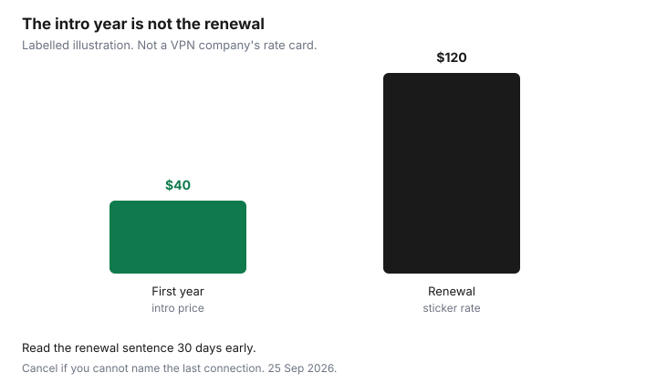

Subscriptions · Canada
Antivirus and VPN Subscriptions in Canada: Keep, Downgrade, or Cancel
Security renewals are quiet because the product is fear. A popup at the end of a trial, a multi-year VPN that was “on sale,” a second antivirus because a laptop nagged during setup. The household does not feel safer. It feels billed. This page is a keep, downgrade, or cancel decision. It is not a threat briefing, and it does not name a winner.
Start from what the computer already does, then ask when a VPN was last turned on. Cancel in the place that billed you, which is often Apple or the vendor site, not the icon in the menu bar. The trial checklist covers the card you typed on day zero. A charge you do not recognize is the statement hunt.
Disclosure: VPN services and security software are offer types. Saving Optimizer may earn a commission if we later add a partner link. We do not currently claim a partnership with any antivirus or VPN vendor, and we do not rank products. Education only. An updated Windows or macOS install is the starting point, not a product recommendation.
Key takeaways
- Windows includes Microsoft Defender Antivirus. macOS checks apps and blocks many untrusted installs. A paid suite has to earn its renewal with a job those tools do not do.
- A VPN is for a specific use, such as travel or a network you do not trust. An always-on annual plan is a subscription you should be able to justify with the last time you connected.
- Multi-year checkout prices are introductory. The renewal is often the regular rate. Read the renewal sentence before the term ends.
- One paid security stack per household. A second licence on every laptop is a duplicate, not defence in depth.
- If you cannot name the last time you opened the VPN, cancel it. Keep the confirmation.
What Windows/macOS already include vs paid AV upsells
A current Windows PC runs Microsoft Defender Antivirus as part of Windows Security. It updates with the system. Turning it off to “make room” for a trial is how the trial becomes the only scanner, and then the renewal. If Defender is already on and real-time protection is on, a second full antivirus suite is an overlap. Two real-time scanners also slow the machine, which is the complaint that makes people pay for a third “optimizer.” That optimizer is another subscription. Decline it.
A Mac relies on Apple’s own checks: Gatekeeper for apps you install, XProtect-style malware checks that update in the background, and a firewall you can turn on. You do not need a paid antivirus icon to have those. A paid product can still be a considered add-on for a household that wants a single support desk, a password manager bundled in a suite they actually use, or coverage for an old Windows laptop that no longer receives quality updates. Those are reasons. “The installer said the computer was at risk” during a free trial is not a reason. Screenshot the price and the renewal, then decide after the scare screen is closed.
Downgrade means dropping a suite to the one feature you use. If the only feature you open is a password manager, pay for a password manager, or use the one built into the browser and the operating system, and cancel the antivirus bundle. If you never open the suite, cancel. Export any passwords first, or you will lock yourself out of the thing you meant to keep.
VPN: when you need one (travel, public Wi-Fi) vs always-on annual plans
A VPN encrypts the path between your device and a server the VPN company runs. That is useful on a hotel or café network you do not control, and on some travel days when you want the connection off the local network. It is not a blanket upgrade to your home internet. At home, on your own router, with the usual care about software updates, an always-on VPN is a monthly fee for a tunnel you are not using. It also does not make illegal activity legal, and it does not replace a bank’s own login security.
Match the product to the days. A month of VPN around a trip is a honest purchase. An annual or multi-year plan is a bet that you will connect often enough to remember why you bought it. Write the trip on the calendar and cancel when you are home, unless the next trip is already booked inside the term you paid for. Public Wi-Fi at a library or an airport is a reason to turn it on that day. It is not, by itself, a reason to keep a renewal in January.
Multi-year VPN deals that auto-renew at sticker rates
The checkout that says two years or three years “for the price of one” is selling the first term. The renewal sentence is the product. Many of these plans renew at the ordinary monthly or annual rate, onto the card you typed, for a new full term. The intro price is not a promise about year four. Find that sentence in the account, not in the ad, and put the renewal date on the sheet 30 days early. Thirty days matters more here than seven, because a three-year term is easy to forget and the sticker renewal is the expensive one.
Labelled illustration, not a vendor’s price. A household takes a first-year offer at $40, then a renewal email quotes $120 for the next year. The $80 gap is the cost of not reading the renewal. If you still want the VPN, the decision is whether $120 matches how often you connected. If you do not, cancel before that date. Do not wait to “see if they discount again.” The discount was the first term.

| Situation | Decision |
|---|---|
| Windows Security is on, and a second antivirus trial is nagging | Cancel the trial before it bills. Leave Defender on. |
| You use the password manager in a suite and nothing else | Downgrade to the feature you use, or move the passwords out and cancel the suite. |
| VPN connected on the last trip, next trip is booked | Keep through that trip. Calendar the cancel for the week you return. |
| VPN renewal is the sticker rate and you cannot name a connection | Cancel before the renewal. One stack, not a second licence “for the other laptop.” |
| The same suite is billed on two laptops | Keep one household plan if it allows those devices. Cancel the duplicate. |
Cancel paths and trial traps on security vendor sites
The trial trap is a card collected on day zero and a cancel control that is not the uninstall button. Deleting the app leaves the subscription. If the receipt says Apple, cancel in Settings, your name, Subscriptions. Apple’s Canadian support page, published 14 Sep 2026 and used on the trial guide, says to cancel at least 24 hours before a trial ends. If the receipt says Google Play, cancel in Payments and subscriptions. Uninstalling does nothing. If the receipt is the vendor, cancel in that account on the web, and save the confirmation email.
Vendor sites bury the control under account, membership, or billing, and they offer a discount when you click cancel. A discount is a new price for a product you have decided you do not use. Take it only if you can name the next time you will open the app. Otherwise finish the cancel. A phone number that exists only to “save” the subscription is still a cancel path if the website has no button. Ask for the end date and the confirmation in writing. Then check the card on the next statement, the same way you would after any other subscription.
One security stack per household—kill duplicates on each laptop
List every laptop and phone, and the security icon on each. The goal is one approach, not a logo on every device that happens to match the last installer. If the Windows machines use Defender and the Macs use Apple’s own checks, that can be the stack. A single paid suite that covers the household is the other clean version, if you use it. Two paid suites, one from a store demo and one from a renewal three years ago, is the version to cut.
Phones are included. A VPN app on a phone and a different VPN on a laptop, both renewing, is two products. Keep the one you will actually open on the trip. Carrier “device security” add-ons ride the phone bill and will not show on the Visa. Read the mobility add-ons during the quarterly audit. One of them is often the duplicate.
Decision rule: cancel if you cannot name the last time you used the VPN
The rule is specific on purpose. Open the VPN app, or the account’s connection history if it has one, and say the month out loud. “March, at the airport” is a keep-or-calendar decision. “I think it’s on in the background” is a cancel. Background is not use. If the last connection was more than a season ago and no trip is booked, cancel before the renewal and let the term you paid for run out. You can buy a month the week you travel. The rejoin costs less than a year of a tunnel you forgot.
The same sentence works for antivirus you never open: if you cannot name the last time you used it for something Defender or the Mac’s own checks do not already do, cancel the paid one and leave the built-in protection on. File the confirmation with the other cancellations. A security subscription is still a subscription.
Sources & date stamps
- Decision guide. No vendor prices are quoted as current Canadian stickers. The $40 first year and $120 renewal chart is a labelled illustration of an intro-to-sticker gap, not a company’s rate card.
- Apple Support (Canada), subscriptions page published 14 Sep 2026, as used on the free-trial guide: cancel at least 24 hours before a trial renews. Deleting the app does not cancel. Settings, your name, Subscriptions.
- Google Play’s cancel path, as used on the trial guide: Payments and subscriptions. Uninstalling does not cancel.
- Built-in protections named here are the operating system’s own features (Windows Security with Microsoft Defender Antivirus; on a Mac, Gatekeeper, malware checks that update with the system, and the firewall). Confirm they are enabled on your device. This page is not a security audit.
Frequently asked questions
Does a Canadian household need paid antivirus?
Not by default. Windows includes Microsoft Defender Antivirus, and a Mac has its own app and malware checks. A paid suite has to do a job those do not do, such as a password manager you actually use. A trial scare screen is not that job.
Is a VPN required on home Wi-Fi?
No. The case for a VPN is a network you do not trust, including many public and travel connections. An always-on annual plan at home is a subscription. Keep it only if you can name the last time you connected.
The multi-year deal was cheap. Why is the renewal high?
The cheap price was the first term. Renewals are often the regular rate. Read the renewal line in the account and cancel before that date if you will not use it.
I deleted the antivirus app. Am I cancelled?
No. Cancel where the receipt says you were billed: Apple, Google Play, or the vendor’s website. Keep the confirmation email and check the next statement.
Should every laptop have its own security subscription?
One household stack. A second paid suite on each laptop is a duplicate bill. List the devices, keep one approach, and cancel the extra renewals.